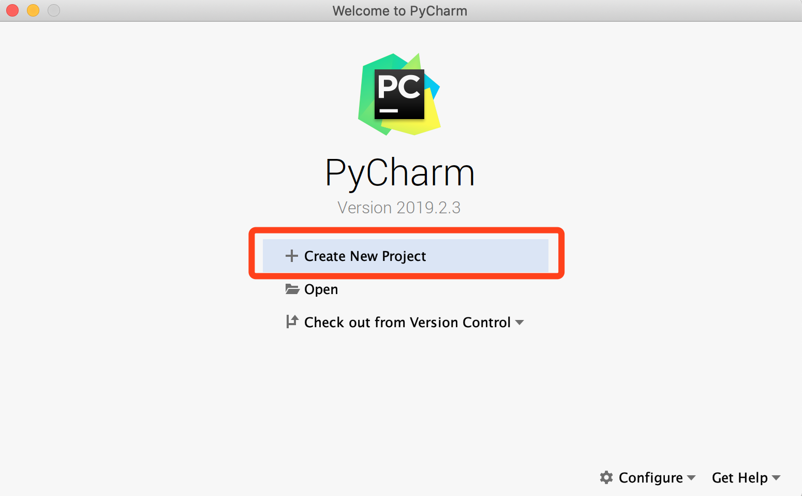
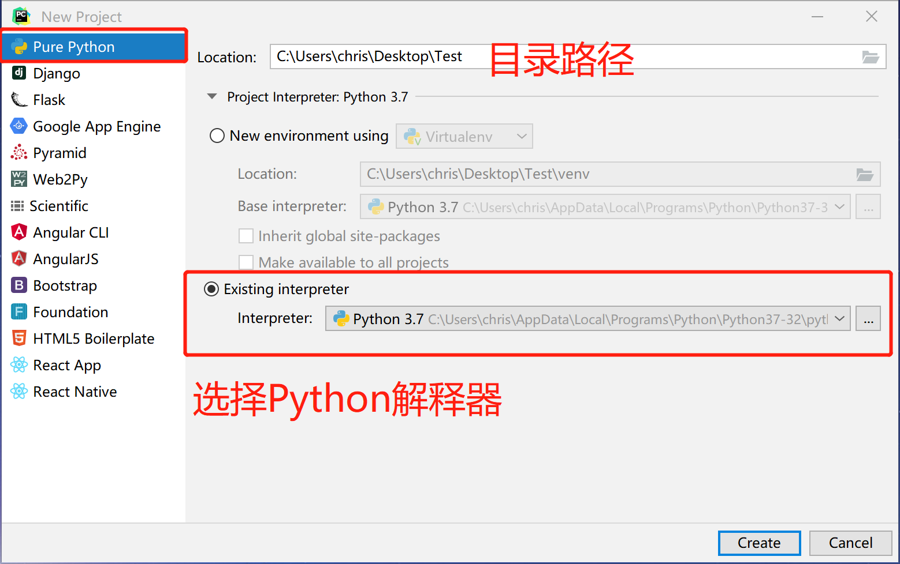
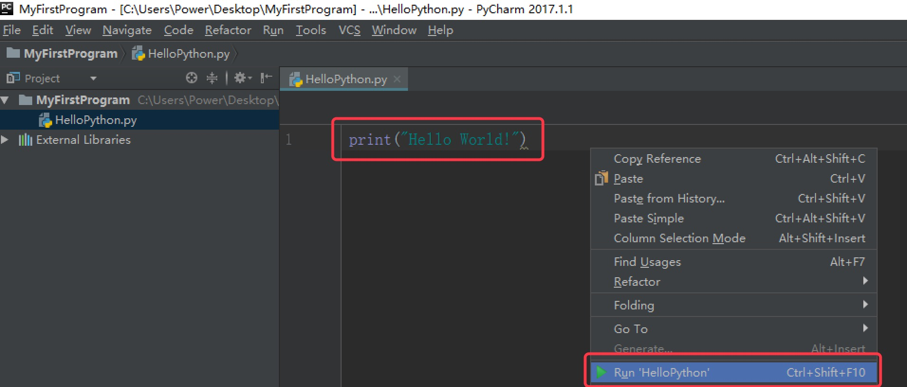

运行Pycharm,选择
Create New Project,创建一个新的Python工程。 选择'Pure Python'创建一个新的纯Python工程项目，
Location表示该项目的保存路径，Interpreter用来指定Python解释器的版本。 右击项目，选择
New，再选择Python File
在弹出的对话框中输入的文件名
HelloPython，点击OK，表示创建一个Python程序的文本文件，文本文件后缀名默认.py
在新建的
HelloPython.py文件里，输入以下代码，并在空白处右键选择Run运行，表示输出一段hello world字符串。
print("hello world!")

- 运行成功后，Pycharm Console窗口将显示我们的输出结果。